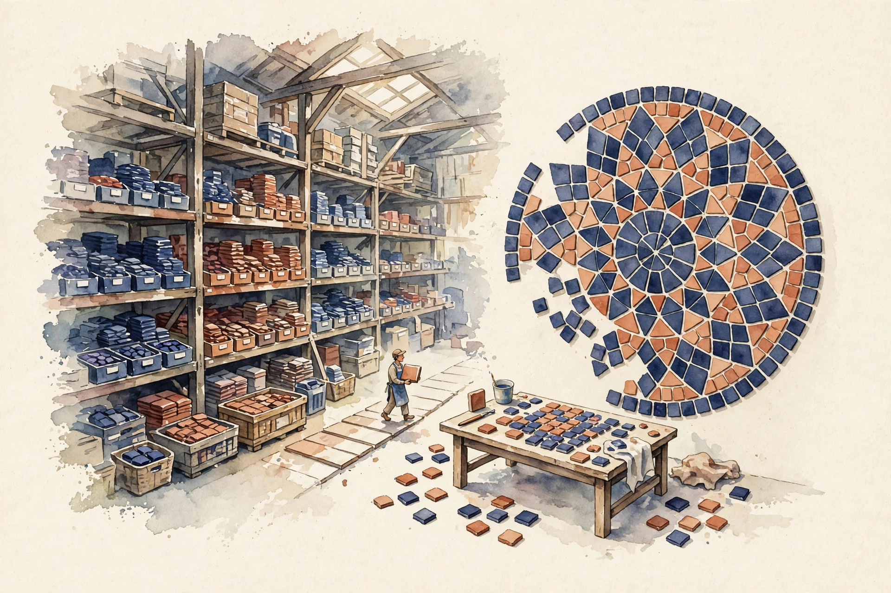
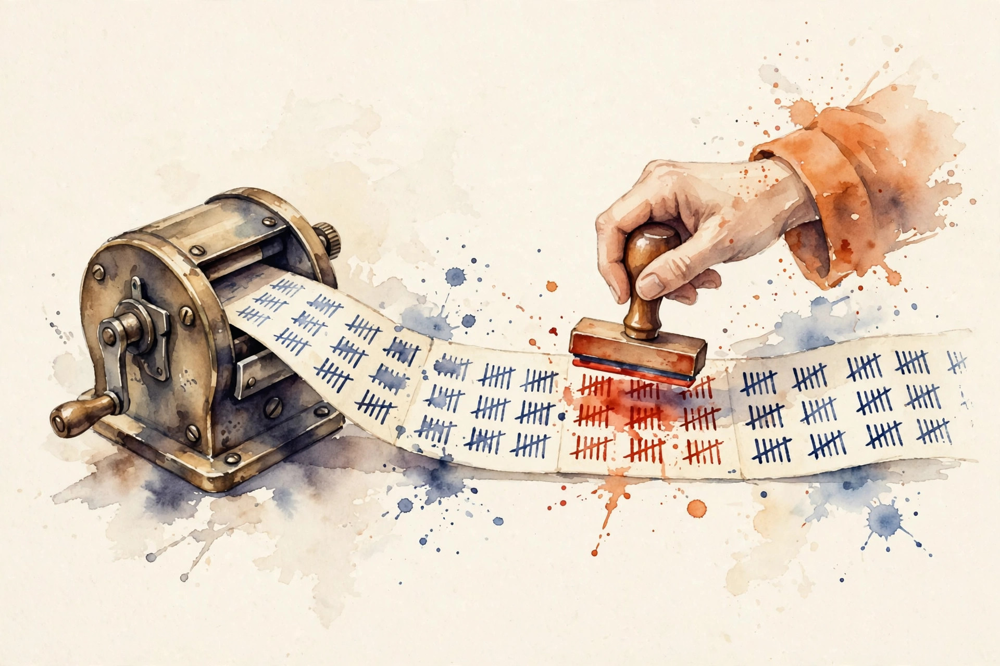
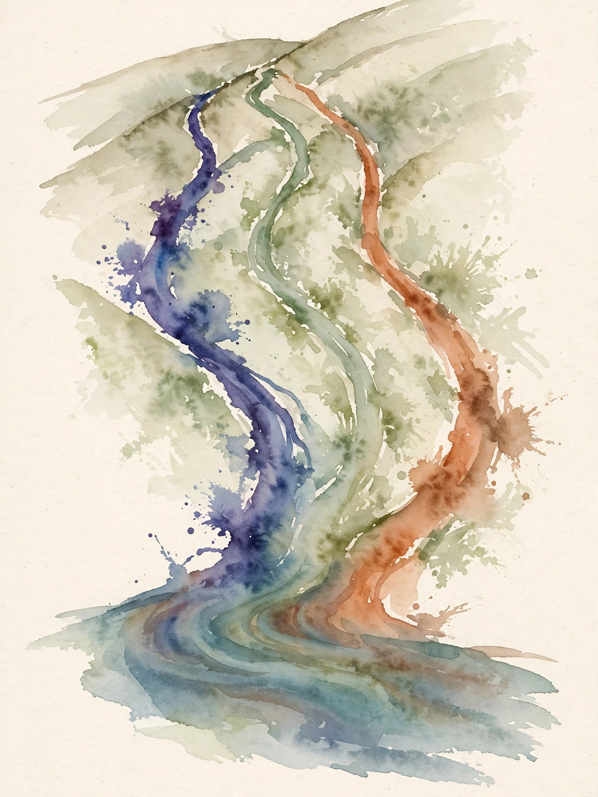

Companion · narrated from the lesson document
FLOPs are cheap. Bytes are dear. This companion walks the kernel unit: tiling for SRAM, the online softmax that lets attention stream, the tiled forward and backward of FlashAttention, block sparsity, fusion, Triton, and the reference comparisons and invariants that keep tiled code honest.
From the lesson The idea, and every number beside it, comes from the cited section of u07_kernels.md. The phrasing is the companion's.
Illustration Invented by the companion: an analogy, a toy with made-up values, or a what-if. Never lecture content.
companion Companion voice: the idea above the tag is from the lesson. The generalization below it is the companion's.
Provenance: no full lecture transcript exists for this session. The page narrates the lesson document content/v2/cs336/lessons/u07_kernels.md, not a video. Claim class: REQUESTED-BRANCH. Standing note: no GPU on the lesson's build box. Kernel algorithms are studied as numpy tiled reference implementations on CPU. Every number is computed. Each carries the lesson section that reports it.

Section 1 · Remediation
From the lessonRemediation
Fast memory (SRAM) is small, slow memory (HBM) is large. A kernel that streams data once from HBM and reuses it in SRAM beats one that re-reads it, even with identical FLOPs. Tiling splits the work into blocks that fit in SRAM. The online softmax lets attention tile over the sequence.
From the lessonRemediation
The worked check, from visuals/compute_u07.py (executed 2026-10-06): materializing (B=2, h=8, T=4096) bf16 scores moves 537 MB. Streaming Q/K/V once moves 25.2 MB. Same math, 21x less traffic.
visuals/compute_u07.py, executed 2026-10-06.Identical FLOPs can move 21x different bytes. The FLOP count never sees the memory wall.
Section 2 · C01, C10
From the lessonC01 §2, §3, §5, §6
How big a block fits? SRAM holds the working tiles, HBM holds the matrices. The tile size is the largest block with all live tiles fitting: 4 * Bc * dh * bytes <= SRAM. Bigger tiles mean fewer HBM passes and better reuse. The loop nest streams K/V blocks for each Q block, and total HBM reads scale with the block count. The lesson's toy, executed 2026-10-06: 100 KB SRAM, dh=64, bf16, 4 resident tiles gives Bc = 200, and T=4096 needs 21 blocks.
From the lessonC10 §2, §3, §5, §6
The budget equation, generalized: tiles * Bc * dh * bytes + stats <= SRAM. More resident tiles shrink Bc, smaller Bc means more blocks and more passes. Bc = (SRAM - stats) // (tiles * dh * bytes). The lab tabulates: 4 tiles gives 200, 5 tiles gives 160, and dh=128 with 4 tiles gives 100.
From the lessonC10 §5 Block-size toy. The lesson's budget equation, your numbers. Bc = SRAM // (tiles * dh * bytes).
SRAM (KB) dh bytes tiles
Press the button.
Stats term omitted in the toy (the lesson subtracts it first). At the defaults: 200, matching C01 §6.
Tiles sized for the wrong SRAM spill silently to slower memory: 2 to 5x slower with correct results. And ignoring the statistics (m, l, accumulators) spills the kernel mid-loop.
Section 3 · C02
From the lessonC02 §2, §3, §5
Softmax needs the max first, so how can it stream? Keep a running max m and normalizer l. A new block with max mb rescales: m' = max(m, mb), l' = l * exp(m - m') + sum(exp(block - m')). The rescaling corrects the old terms to the new max. The mechanism: exp(x - m') = exp(x - m) * exp(m - m'). The alpha factor rescales both the accumulator and the normalizer. Induction over blocks gives the exact softmax.
From the lessonC02 §6, §9
The lesson's toy, executed 2026-10-06: blocks [1, 2], [3, 4] give m = 4.0, l = 1.5530, exactly matching the full computation. O(T) extra exp calls for the rescaling: negligible. The alternative is two-pass softmax, which needs the full row in SRAM. Online is the streaming answer.
From the lessonC02 §5 Online-softmax toy. Give two blocks (comma separated each). The toy runs the lesson's rescaling update.
Press the button.
Update: m' = max(m, mb), l' = l * exp(m - m') + sum(exp(block - m')). At the defaults: m = 4.0, l = 1.5530, matching C02 §6.

Accumulating l in fp16 lets the rescaling underflow: rows go to nan. fp16 accumulators on long sequences saturate the running sum, and attention collapses to uniform.
Section 4 · C03
From the lessonC03 §2, §3, §5
Attention without the T-squared matrix? Outer loop over Q blocks, each fitting in SRAM. Inner loop over K/V blocks: compute scores, update the online softmax statistics, accumulate O. Never materialize the full scores. Output rescaling happens once at the end per row. The inner loop is exactly the online softmax with the V-weighted sum folded in: acc' = acc * alpha + exp(S - m') V. Dividing by l at the end gives softmax(S) V.
From the lessonC03 §6, §9
The lesson's run, executed 2026-10-06: the tiled forward matches naive to 3.33e-16, with traffic 537 MB versus 25.2 MB. Same FLOPs as naive, HBM traffic O(T) instead of O(T^2). SRAM-sized tiles bound the inner loop. Alternatives: naive attention (simple, memory-bound), linear attention (U04, approximate). FlashAttention is exact and IO-aware.
Forgetting the final division by l leaves outputs scaled by the row normalizer, and the model trains on garbage.
Section 5 · C04
From the lessonC04 §2, §3, §5
The forward never stored the scores, so what does backward use? It stores only m and l per row (O(T)) and recomputes the score tiles in the backward pass. Backward needs dO, then per tile: recompute S, P = softmax(S) from stored m/l, accumulate dQ, dK, dV terms. dV = P-transpose dO. dP = dO V-transpose. dS = P * (dP - rowsum(dP * P)). dQ = dS K. dK = dS-transpose Q. Each tiled with the same blocking.
From the lessonC04 §6, §9, §11
The lab: tiled-style dQ matches finite differences to 3.41e-07 max relative error on the toy. Costs: about 2.5x the forward FLOPs (recompute), HBM stays O(T). The alternative stores scores: simple, O(T^2) memory. Recompute is the IO-aware answer. Recomputation trades FLOPs (cheap) for HBM (the bottleneck). One qualifier: storing m/l in fp16 makes recomputed P mismatch and gradients come out wrong. The assumption "statistics are cheap to store" needs the fp32 qualifier.
Recompute trades cheap FLOPs for dear bytes. It also moves the training-step rule: the U02 3x rule becomes about 4x under recomputation.
Section 6 · C05, C06
From the lessonC05 §2, §3, §5, §6
What if most blocks are masked anyway? The mask becomes a block mask: fully-masked blocks are skipped entirely, no loads, no math. Savings need coarse structure: random sparsity does not tile well. Skipped fraction = masked blocks / total blocks. The inner loop checks the block mask before loading. The lab: a sliding-window mask at block granularity, window w=3 blocks of 21, skips 18 of 21 inner iterations, 6x fewer (causal + window).
From the lessonC05 §11
The trap: a checkerboard mask at element granularity leaves no block fully masked. Zero savings, plus mask overhead. The assumption "sparsity helps" breaks without block structure.
From the lessonC06 §2, §3, §5, §6
Dropout, add, norm: three passes or one? Elementwise chains are memory-bound: each pass streams the tensor. Fusing them into one kernel streams it once. The rule: fuse while the working set fits in SRAM and the ops stay elementwise. Traffic = passes * elements * bytes. Fusing n passes into 1 divides traffic by n. The lesson's toy, executed 2026-10-06: 101 MB separate versus 34 MB fused for (B=2, T=4096, d=2048) bf16.
visuals/compute_u07.py, executed 2026-10-06.
Fusing a reduction across the sequence with an elementwise op breaks the tile-at-a-time pattern: the reduction needs the whole row.
From the lessonC06 §9, §10
3x traffic cut here, at the price of compile and code complexity. Framework fusion (torch.compile) versus hand fusion: hand fusion for the hot path.
Section 7 · C07
From the lessonC07 §2, §3, §5
How do you write a tiled kernel without CUDA? Triton: each program instance handles one tile. tl.arange builds indices, tl.load/store move tiles, the compiler handles the rest. The program id maps to the tile index: the grid is the loop over tiles. pid = tl.program_id(0), offs = pid*BLOCK + tl.arange(0, BLOCK), x = tl.load(ptr+offs, mask=...). The mask handles the tail. The lab annotates a numpy-block add against the Triton lines.
From the lessonC07 §9, §10, §11
CUDA gives full control with more code. torch.compile needs no kernel code. Triton fits custom tiled ops. The trap: a BLOCK that is not a power of two makes the compiler pad, and the mask logic silently covers garbage. The assumption "any BLOCK works" breaks. Powers of two are the contract.
A non-power-of-two BLOCK pads silently, and the mask covers garbage.
Section 8 · C08, C12
From the lessonC08 §2, §3, §5, §6
The tiled kernel runs. Is it right? Every tiled kernel gets a naive reference on small random inputs. Compare with allclose at a stated tolerance. Test the tails (non-divisible T), the causal variant, and block-size 1. The protocol: (1) tiny hand case, (2) random small vs naive, (3) edge shapes, (4) dtype variants. Each layer catches different bugs. The lesson's run, executed 2026-10-06: max deviation 3.33e-16 on the toy. Minutes on CPU. The alternative is wrong kernels.
From the lessonC12 §2, §3, §5, §6
What cheap checks catch kernel bugs before the reference comparison? Invariants: attention rows sum to 1, outputs lie in the convex hull of V rows, causal outputs at t do not depend on future inputs, block-size changes do not change results. Each follows from the math: softmax rows sum to 1, softmax(S)V is a convex combination, the online rescaling is block-size independent. The lab runs all four on the tiled toy. The broken variant (missing alpha) fails invariant 4. Seconds, run before the expensive comparisons.
Invariants pass but the kernel is still wrong: a permuted-block bug preserves all four. And comparing in fp16 with a 1e-8 tolerance fails on correct code.
Section 9 · C09, C11
From the lessonC09 §2, §3, §5, §6
"3x faster attention": faster than what? A speedup claim is a ratio: optimized over baseline under conditions. Verify the baseline (naive or best known?), the shapes (long or short context?), and the dtype. The 537-to-25.2 MB traffic ratio bounds the plausible speedup. The protocol from U06-C09 applied to kernels: quote, reproduce conditions, measure, explain the gap. The lab dissects the toy claim "21x less traffic" (537/25.2) with the stated shapes. The trap: a claim measured against an unoptimized baseline is real and meaningless. The assumption "faster means better" breaks. The baseline defines the claim.
From the lessonC11 §2, §3, §5
The tiled kernel disagrees with naive in bf16. Why? Tiled kernels reorder floating-point sums, and in low precision the order matters. The rules: statistics (m, l) in fp32, accumulators in fp32, inputs/outputs in the working dtype. Error bounds grow with the number of reordered terms. fp32 accumulators keep the tiled result within 1e-5 of naive in bf16. The lab shows the deviation shrinking when accumulators move to fp32. fp32 accumulators cost registers. The alternative is wrong answers. Full fp32 is slower and simpler. Mixed precision is the standard.
Section 10 · Synthesis
From the lesson The arc, end to end. SRAM is small and fast, HBM large and slow, and the kernel that streams once wins (remediation). Tile size solves from the SRAM budget with every resident counted (C01, C10). The online softmax rescales running statistics block by block, exact (C02). The tiled forward never materializes the T-squared matrix and matches naive to 3.33e-16 (C03). The tiled backward stores m and l and recomputes the rest (C04). Block masks skip whole masked blocks, fusion merges elementwise passes (C05, C06). Triton writes tiles as programs with power-of-two contracts (C07). Naive references and four invariants verify the result (C08, C12). Statistics and accumulators stay in fp32, speedup claims get dissected (C09, C11).
From the lesson Where the unit connects, in the lesson's own links: U04-C02 supplies the sliding-window mask that becomes a block mask. U06-C03 states the fusion rule. U05-C12 supplies the reference-comparison protocol. U02-C07 reprices the training-step rule under recomputation. The standing note holds for the whole unit: no GPU on the build box, numpy tiled references on CPU, every number computed.
Wisdom index
Each nugget states the idea in plain words, why it matters, and the transferable principle. Every one is anchored to its lesson section.